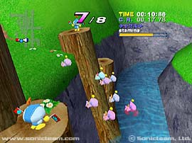

|
 |
|
スクリーンショット / チャオワールド
新しくなったチャオワールド・３つのガーデン・チャオレース
|
| チャオ | |
|
チャオもいっそうパワーアップ！ ソニックアドベンチャー２では、チャオにだってヒーロー・ダークがあるのです。 ソニックなど、ヒーローサイドのキャラクターが可愛がったチャオは段々とヒーローの属性に、またＤｒ．エッグマンなどのダークサイドキャラクターの場合は、ダーク属性へと、プレイヤーキャラクターの属性に近づいていきます。 いじわるをした場合には、それぞれ逆の属性へと変わっていくようです。 | |
| チャオガーデン | |
| ここは、ソニックアドベンチャー２をプレイしているみなさんが、初めて訪れるガーデンです。 アクションステージで「チャオキー」を手に入れると、ここに来ることが出来るようになります。 さっそくタマゴを孵して、チャオを育ててみましょう！ |
 | |
| 水と緑が豊富な、のどかなところ。チャオたちにとって居心地の良い場所です。 | チャオレースが楽しめる「チャオスタジアム」への入り口もここにあります。 |
 | |
| 小動物をだっこさせると、チャオはその小動物の特徴を吸収します。 | 怒りんぼや泣き虫。育て方によってチャオの性格は様々に変化します。 |
| なかよくふたりでテレビの時間。レースで優勝すると、こんな豪華なオモチャが。 | 口笛をふけば全員集合！チャオ達は音をききつけて走りよってきます。 |
| |
| ヒーローガーデン | |
| ある条件を満たすと行けるようになる、まるで天国みたいな雰囲気のガーデン。 |
| このガーデンは、ピンク色の雲の上に浮かんでいるようです。 | キレイな噴水が、ここのシンボル。空気もおいしい？ |
| ヒーローチャオたちには、さぞかし住みやすい場所でしょう。 | でも、ダークチャオたちは、ここが気に入らないようです。 |
| |
| ダークガーデン | |
| ある条件を満たすと行けるようになる、暗くて寒々とした、ちょっと不気味なガーデン。 |
| ガイコツやお墓もあるし、雲行きもなんだかアヤシイ…。 | 生えている木まで、とっても不気味。 |
| ダークチャオたちは、ここを気に入ってるみたいです。 | おー、よしよし。この子にはちょっと怖かったみたい。 |
| |
| チャオレース | |
| 育てたチャオを参加させることができる、チャオレース。優勝すれば、チャオのオモチャがもらえます。 |
 |  |
| さあ、今こそ手塩にかけたチャオの実力を試す時です。まずは「ちからだめし」から。 | レースの種類も充実！チャオにたくさん小動物をだっこさせて、強く育てましょう！ |
|  | |
| 応援ボタンで応援すれば、チャオはがんばって走ります。スタミナには気をつけて！ | みごと１着でゴールイン！ご褒美にもらえるオモチャは何だろう！？ |
 |
|
| 本ホームページに掲載する一切の文書･図版･写真等を、手段や形態を問わず複製、転載することを禁じます。 | |
| このページは、ソニックチームＵＳＡがサンフランシスコよりお送りしています。 | |
| Copyright (C) SONICTEAM, LTD. 2001 | |